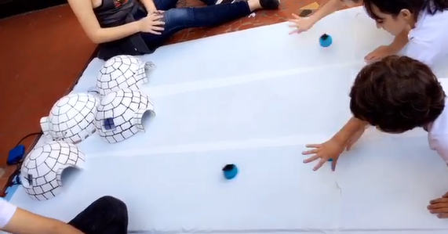

Natureza do Design - Professor Roberto F.
Os alunos receberam a proposta da construção de um brinquedo infantil biomimetizado, ou seja, inspirado em algum animal. Esse exercício é abstrato dessa forma proprositalmente, a fim de que se utilizem os processos de Design discutidos em sala. Além disso, o FabLab do Insper seria fundamental para a realização do projeto, agregando também prática com equipamentos básicos de marcenaria, costura, fresadoras e impressoras 3D.
Aprendeu-se sobre o processo de design voltado para o usuário criando um brinquedo infantil com o tema de um animal. Decidiu-se aproveitar a ideia do pinguim e sua habilidade em deslizar para criar um brinquedo em que a criança deveria jogar o pinguim pela plataforma de modo que ele deslizasse até a porta de algum dos iglus, sendo que, ao acertar, uma luz no interior do iglu se ascenderia.
Ler mais